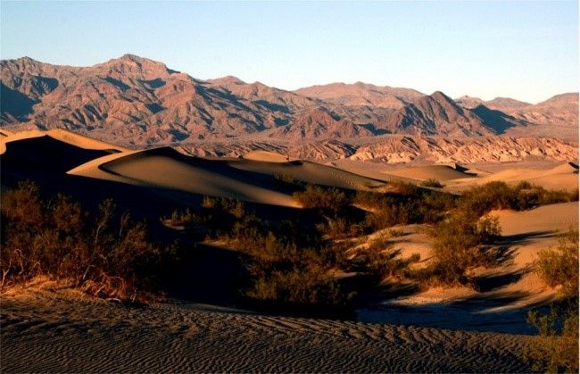
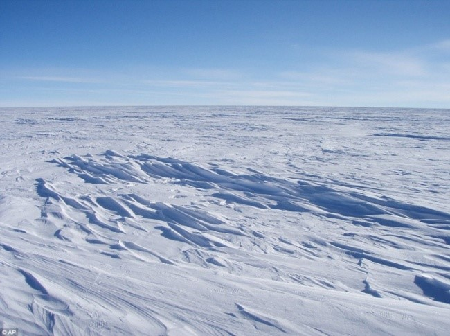
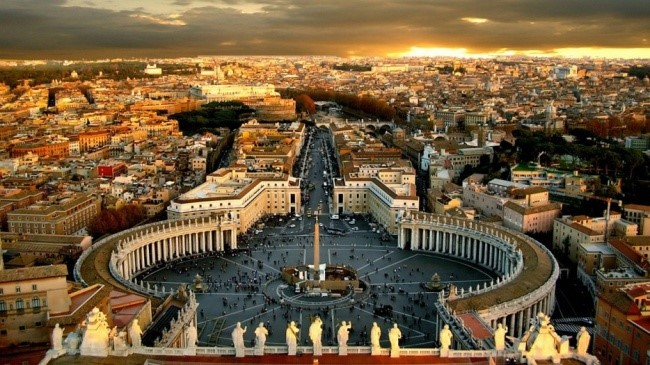
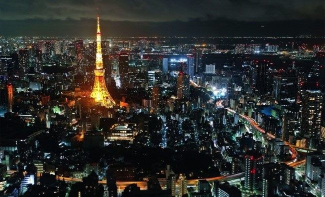
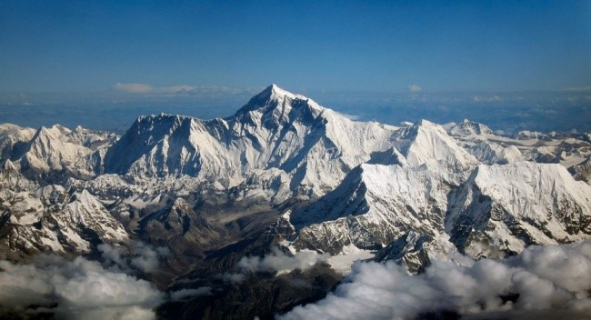
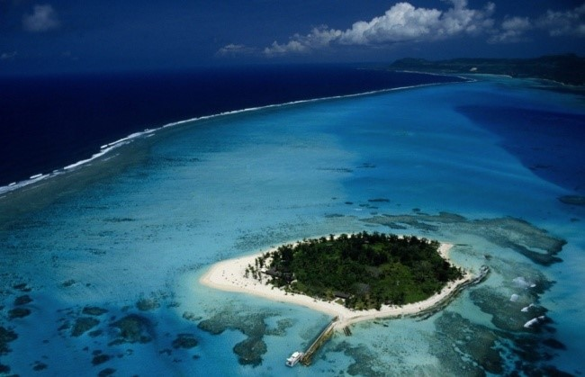

Век живи — век учись.
Особенно когда в мире все так стремительно меняется. И если самая высокая точка и самое холодное место на планете известны почти всем, то кто сможет сразу сказать, какой объект фотографируют чаще всего? Или в какой стране пьют больше всего кофе?
Самый настоящий ад на Земле — Долина смерти в США. Жарче всего здесь было 10 июля 1913 года, когда температура поднялась до 56.7 °C

А Снежная королева точно живет здесь — на станции «Восток» в Антарктиде. Здесь самое то: 10 августа 2010 температура была аж ?89.2 °C. Морщины точно не появятся.

Конечно же, в Китае, а где еще? В Шанхае на данный момент двадцать четыре с лишним миллиона жителей.
Государство-город Ватикан насчитывает всего 842 жителя, и только около 600 из них имеют гражданство. Дело в том, что не достаточно просто родиться там, настоящий гражданин должен еще и служить церкви. Так что остальные двести с небольшим человек имеют статус резидента.

Вполне возможно, что эта башня в Токио на самом деле из золота, потому что это самый состоятельный город на Земле на данный момент.

Столица самой бедной страны на планете — Демократической республики Конго — и есть самый небогатый город на Земле. В Киншасе многие жители живут на 1$ в день.
География, пятый класс, а до сих пор впечатляет! Легендарный Эверест на границе Непала и Китая высотой целых 8 848 м над уровнем моря.

Бездна Челленджера в Марианской впадине не совсем без дна. Просто это дно очень глубоко, примерно на 10,916 м ниже уровня моря.
